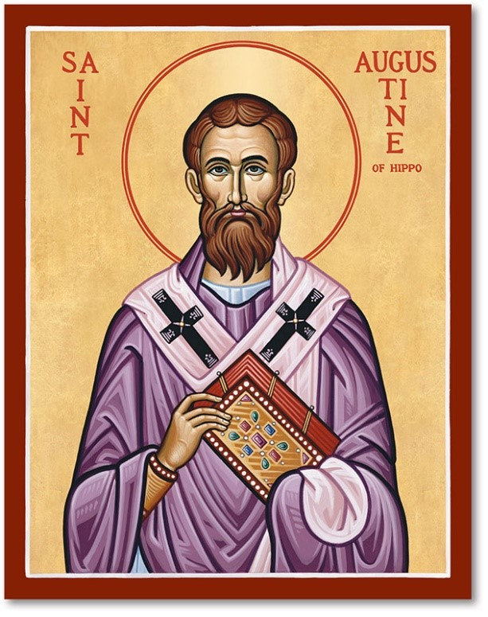
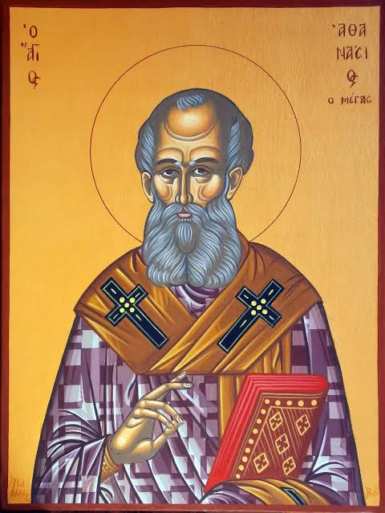
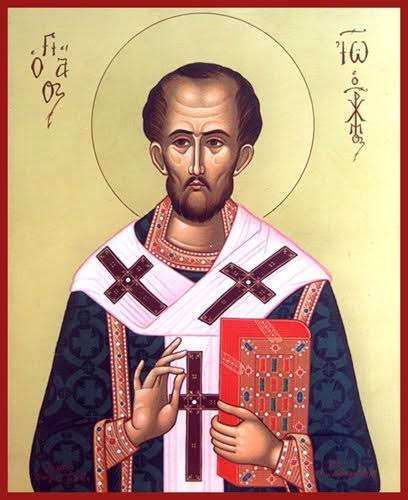

Office Of Exorcism
St. Michael the Archangel Parish
Quis ut Deus?
Traditional Roman Catholic
Spiritual & Healing Ministry
Preserving Sacred Scripture,
Sacred Tradition,
Catholic Books,
and Historical Church Documents.
Quis ut Deus?
Traditional Roman Catholic
Spiritual & Healing Ministry
Preserving Sacred Scripture,
Sacred Tradition,
Catholic Books,
and Historical Church Documents.
The Early Fathers of the Church whose writings preserve the Apostolic Faith and Sacred Tradition.

Years: 354–430 AD
Title: Bishop of Hippo
Region: North Africa
Feast Day: August 28
Major Works:
One of the greatest Doctors of the Church whose writings shaped Western Christianity for centuries.
Biography
Years: 296–373 AD
Title: Bishop of Alexandria
Region: Egypt
Feast Day: May 2
Major Works:
Defender of the Divinity of Christ and one of the greatest opponents of the Arian heresy.
Biography
Years: 347–407 AD
Title: Archbishop of Constantinople
Region: Antioch
Feast Day: September 13
Major Works:
Known as the "Golden-Mouthed" preacher for his eloquent sermons and biblical commentaries.
Biography